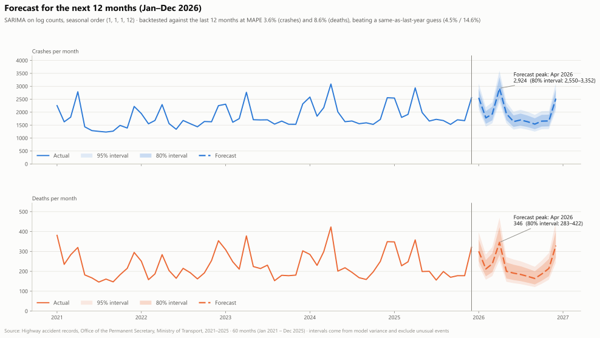
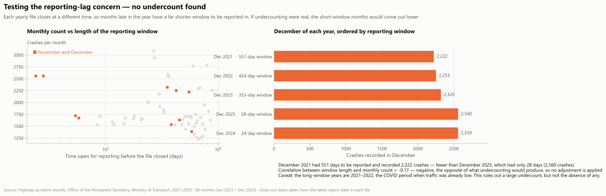

Part 2 · Seasonality
The spike is real — and partly measures enforcement
Sixty months, January 2021 through December 2025. Scroll to watch the Seven Dangerous Days windows shade in as the series reaches each one.
Crashes run 3.1× an ordinary day inside the Seven Dangerous Days — Songkran 11–17 April and New Year 30 December – 5 January, level with each other. Read the alcohol share with care: 5.8% of crashes inside those windows are recorded as alcohol-related against 0.8% outside — because that is when officers are running breath tests. The campaign window is when Thailand measures drink-driving, not only when it happens.
Part 2 · Forecast
Planning next year's checkpoint capacity

SARIMA on log counts, backtested against the last 12 months at MAPE 3.6% for crashes and 8.6% for deaths — better than assuming the same as last year. April 2026 is forecast at 2,924 crashes (80% interval 2,550–3,352) and 346 deaths (283–422); September is the trough at 1,539. Reporting lag was tested and rejected: December 2021 had 551 days to be reported and 2,222 crashes, December 2025 had 28 days and 2,560.

Part 3 · Recommendation, part 1
Deploy where deaths are, not where crashes are
National choropleth first — deaths per 100 crashes, province by province. Scroll to move the camera into the north-east and watch the road network and fatal crashes fade in. The map is watched, not driven — press Explore to pan and zoom it yourself.
Target sections, not provinces — the 14 sections crashing furthest above their expected rate are 79% motorway, Routes 7 and 9, while deaths per crash concentrate in the north-east. Staff by month: April needs 1.9× September's capacity. Surge for the Seven Dangerous Days at roughly 3× ordinary staffing, starting two weeks early. Set checkpoints by hour — weekdays differ by under two points, hours by 2.1×.
Part 3 · Recommendation, part 2
How to run it, and what it cannot see
Limitation — and what follows from it
Alcohol is recorded on 1.4% of crashes, but almost entirely inside the 14 campaign days each year. Outside them it appears only when a crash was serious enough to investigate — the fatality premium falls from 2.31× to 1.17× once detection is consistent, and inverts at night. Detected year-round at the in-window rate, there would be roughly 4,900 more alcohol crashes and 750 more alcohol deaths than the 345 this data records.
Year-round breath testing is therefore a prerequisite for evaluating any deployment plan, including this one. Without it, a fall in recorded alcohol crashes cannot be told apart from a fall in testing.
Implementation: tailor by archetype — freight corridors need heavy-vehicle enforcement, killer highways need speed and alignment work, urban motorways need faster incident response rather than more checkpoints. Measure against the forecast's lower bound. Report deaths per 100 crashes by section, not crash counts — crash counts fall whenever traffic falls, which flatters any campaign.
Two further limits: this file is highways only — about 17% of Thailand's road deaths — and the exposure analysis covers six main routes, 23.6% of the crashes. Treat the plan as a hypothesis with a measurable test attached, not as a settled answer.
References
Sources, geography and tools
Data
- Highway accident records 2021–2025 (B.E. 2564–2568) — Office of the Permanent Secretary, Ministry of Transport. Every number in this deck except the WHO figures comes from this file.
- Annual Average Daily Traffic 2021–2025 — Department of Highways.
- Annual Average Daily Traffic 2021–2025 — Department of Rural Roads.
- Thailand's national road-death total — Department of Disease Control, three-database integrated system, 2024.
- World Health Organization, Global status report on road safety 2023 — Thailand country profile, data year 2021.
Geography and tools
- Highway centrelines — ArcGIS open data, Department of Highways and Department of Rural Roads. Used as map geometry only, never as an analytical value.
- Province boundaries — GADM 4.1. Map geometry only.
- Python 3.14 with pandas, statsmodels, scikit-learn, scipy and matplotlib; MapLibre GL JS for the maps; PptxGenJS for the uploaded deck.
- This site: three scrolling tabs, one per presenter.